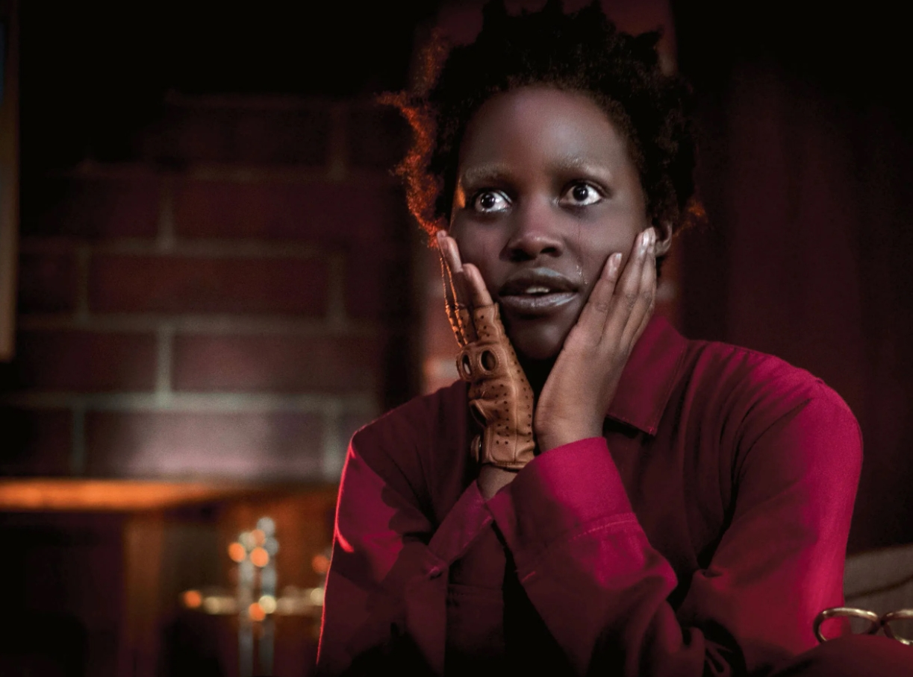

El "Horror Social" es más
atemorizante de lo que crees
Escrito por Brian Uscanga
Hace 8 hrs.
Desde que el humano ha sido capaz de contar historias, ha existido la necesidad de distinguir la sensación que dicha historia evoca en las personas por medio de géneros, los clásicos como: romance, drama, tragedia, comedia [...] que con el paso del tiempo han ido evolucionando para volverse más específicas, más complejas, con más alcance, y con ello se formaron subgéneros como: comedias románticas, thrillers psicológicos, dramas históricos, entre miles de géneros más.
Estos últimos años, en la industria del cine ha habido un subgénero que comenzó a acaparar la atención del público, y fue entonces donde dudas empezaron a emerger y la necesidad de querer solidificar las bases de lo que dicho subgénero es y no es se volvió relevante. Dicho subgénero es el “Terror social”.
La verdad es que este subgénero no es algo que se creó en la última década, sino que es un subgénero que ya llevaba tiempo existiendo en los medios, en el cine e incluso en obras de literatura, desafortunadamente al no tener estándares bien definidos que lo compongan, clasificar una historia como Terror social puede volverse complicado.
El Terror social se caracteriza por ser un tipo de terror que basa su factor atemorizante en temas de importancia sociopolítica y moral que causan inquietud, malestar, incomodidad o ansiedad en el público. Esencialmente, lo que hace que este terror sea Terror social es la cualidad de mostrar que lo que es realmente atemorizante es la humanidad.

Get Out (2019)
El auge de popularidad más reciente por este subgénero que ha ocurrido en los últimos años podemos ubicarlo en el año 2017 con el estreno de la película “Huye” dirigida por el actor, comediante y cineasta Jordan Peele. El filme narra la historia de una pareja Birracial entre una chica caucásica y un chico afroamericano que está por conocer por primera vez a los padres de su novia.
Concluyentemente, por la naturaleza del Terror social, la película da una vuelta en su historia, mostrando que los padres de la chica parecen estar racialmente motivados a realizar actos dudosos y sospechosos los cuales brindan inquietud y ansiedad al protagonista y a la audiencia, mostrando como el verdadero terror es algo que es real, todavía existe y puede ser encontrado en la civilización en la que viven todos.
Jordan Peele describió a su propia película como un Thriller social, y lo define como un terror que es escalofriante y siniestro donde la humanidad es la parte más aterradora de toda la historia.
Definitivamente este concepto de horror se distancia de las historias de terror clásicas donde el enemigo es un ente desconocido, un monstruo con afán de atacar o un fantasma invisible a los ojos humanos, y ese mismo factor es lo que hace que el Terror social sea tan distinto a los diferentes subgéneros que tiene el terror y haya llamado mucho la atención del público, porque saber que abarca temas que existen más allá de la pantalla es lo que lo hace inquietante.
Registros anteriores y alusiones al Terror social ya se habían asociado a películas con décadas de trayectoria como lo son filmes como “Rosemary’s baby” (1968), “The stepford wives” (1975) o “Night of the living dead” (1968). Del mismo modo, obras de literatura pueden entrar bajo esta misma categoría como lo es el libro de “The Handmaid's tale” (1985) o “El señor de las moscas” (1954) donde se expone la inhumanidad que la sociedad puede llegar a tener.
Rosemary's Baby (1968)
Lo más llamativo del Terror social es que es un subgénero excelente que se presta para poder hacer críticas sociales y hacerlas llegar al público en un formato que deje en claro su punto y su motivo, y pueden abarcar temas amplios como el racismo, la división de clases, las creencias religiosas, la opresión, la sexualidad, entre muchos otros temas de importancia social.
Con la reciente popularidad hacia este subgénero que trajo el filme de Jordan Peele, mucha gente ha comenzado a señalar que muchas películas que originalmente no están clasificadas como terror o thriller caen bajo esta misma clasificación, como el largometraje surcoreano mundialmente reconocido “Parasite”, que muestra como la diferencia de clases sociales puede llegar a deshumanizar a las personas.
Por otra parte, muchas personas creen que que el Terror social está haciendo un surgimiento en los medios ya que muchos críticos y premios de la academia tienden a desacreditar filmes de este género bajo la excusa de que son obras que no tienen seriedad y que no califican para ser premiadas,⁴ sin embargo, lo que más importa no es ganarse la mayor cantidad de premiaciones, si no ganarse el corazón del público.
Dinos, ¿Crees que el terror social debería ser más explorado en el mundo del entretenimiento?

Parasite (2020)
Contenido Reciente


Comentarios

Mario Alberto C.
No me gustó mucho como redactaron algunas cosas, la verdad espero algo mejor en el futuro, saludos, echenle ganas.
Elizabeth Mateo Sanz
amé!! me encanta este tipo de contenido!! ojalá puedan hacer más, me voy a suscribir.
Jorge Ignacio Palo
Me encantó la redacción de esté posteo, múy bien hecho y fundamentado.
Soy su fan.